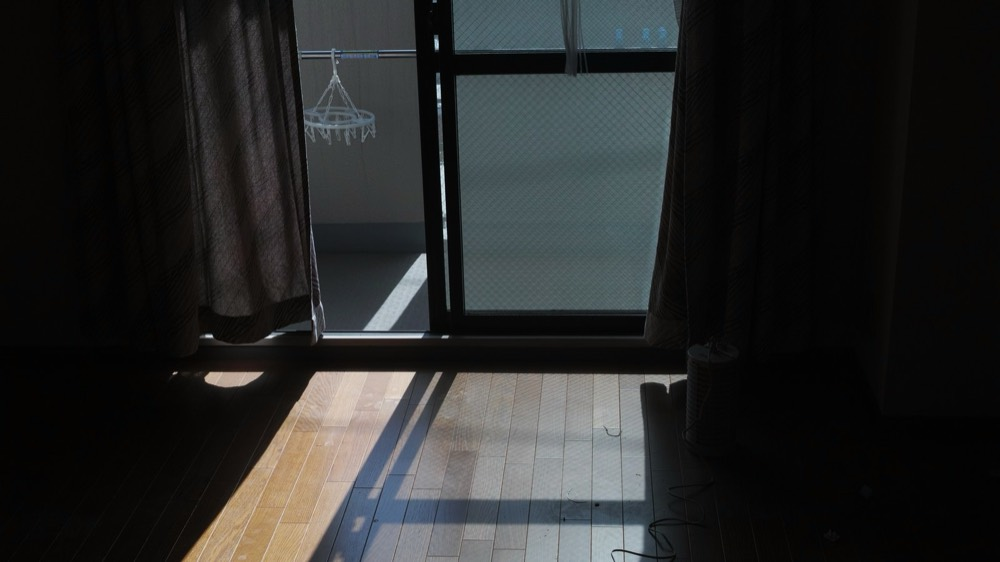

初めて賃貸物件を契約するにあたり、何を確認すればいいのか分からず不安に感じている方もいるのではないでしょうか。賃貸契約では、初期費用の内訳や契約書の内容を事前に確認しておくことで、契約後のトラブルを防ぐことができます。この記事では、初めての賃貸契約で確認しておきたいポイントと、トラブルになりやすい注意点を解説します。賃貸契約に関する情報を整理し、契約前に知っておきたい内容をまとめました。
初めての賃貸契約で知っておきたい基礎知識
まずは、賃貸契約がどのようなものか、基本的な仕組みから確認しておきましょう。初めて部屋を借りる場合、専門用語が多く、何をどこまで確認すればいいのか戸惑うことも多いはずです。契約書を渡されても、どこを重点的に見ればいいのか分からず、そのまま署名してしまう人もいます。契約の基本的な流れを知っておくだけでも、当日の説明がぐっと理解しやすくなります。
賃貸契約とは？
賃貸契約とは、物件のオーナー（貸主）と借りる側（借主）が、部屋を借りる条件について取り決める契約のことです。家賃や契約期間、禁止事項などが契約書に明記され、双方がその内容に同意することで契約が成立します。口約束ではなく、書面で条件を確認し合う点が重要です。あとから「言った、言わない」のトラブルにならないよう、気になる点はその場で書面に残してもらうことをおすすめします。
契約から入居までの流れ
物件探し→内見→申し込み→入居審査→重要事項説明という順で進むのが一般的です。その後、契約書の締結→初期費用の支払い→鍵の受け渡しへと進みます。特に「重要事項説明」は、宅地建物取引士が行う欠かせない工程です。物件の権利関係や設備状況、契約解除の条件など、法的に必須の内容が説明されます。分からない点はその場で必ず質問し、納得したうえで次に進みましょう。
内見時に確認しておきたいポイント
内見は、物件情報だけでは分からない部分を実際に確認できる貴重な機会です。写真や間取り図だけで判断してしまうと、住み始めてから「思っていたのと違った」と感じることもあります。限られた時間の中で、見落としなく確認するのは意外と難しいものです。ここでは、内見時にチェックしておきたいポイントを部屋の中と周辺の2つに分けて紹介します。
部屋の中でチェックすべきこと
日当たりや風通しは、時間帯によって印象が変わるため、可能であれば内見の時間帯を意識しましょう。水回り（キッチン・浴室・トイレ）は、水垢やカビ、水圧を確認しておきましょう。コンセントの位置や数は、家具や家電の配置に直結するにもかかわらず、見落としがちなポイントです。収納スペースの広さや、携帯の電波が部屋の隅々まで届くかどうかも、事前に確認しておくとよいでしょう。
周辺環境・共用部分でチェックすべきこと
ごみ置き場や駐輪場、掲示板などの共用スペースは、管理状況や入居者のマナーを判断する材料になります。整理整頓されているかどうかを確認しておくと、入居後の暮らしやすさをイメージしやすくなります。最寄駅から物件までの道のりも、実際に歩いて確認しておくと安心です。夜間の街灯の有無や人通りの多さも、防犯面で気になる方はあわせてチェックしておきましょう。
賃貸契約前に確認しておきたいこと

契約を結ぶ前に、必ず確認しておきたいポイントを見ていきましょう。契約後に「聞いていなかった」という状況になると、思わぬ出費やトラブルにつながることがあります。特に初めての契約では、費用や条件の細かい違いに気づかないまま契約してしまうケースも目立つので注意が必要です。見落としがちな3つのポイントを、順番に確認していきます。
初期費用の内訳を確認する
初期費用には、敷金・礼金・仲介手数料・前家賃・火災保険料・鍵交換費用など、複数の項目が含まれます。「敷金礼金ゼロ」とうたう物件でも、清掃費や保証会社利用料など別の名目で費用がかかることも珍しくありません。表面上の家賃の安さだけで判断すると、想定より初期費用がかさむこともあります。合計額と内訳を必ず確認しましょう。
敷金・礼金・保証金などの違いを整理する
初期費用の項目には似た名前のお金が多く、違いが分かりにくいものです。敷金は、家賃の滞納や退去時の修繕に備えて預けるお金で、原則として使わなかった分は返還されます。礼金は、貸主へのお礼として支払うお金で、退去時に返還されることはありません。保証金は、主に関西などで使われる呼び方で、敷金とほぼ同じ役割を持つお金です。償却金は、特約によって、退去時に敷金（保証金）から返還されずに差し引かれる一定額を指します。それぞれの意味を理解しておくと、初期費用の見積もりを正しく比較できます。
契約期間と更新条件を確認する
契約期間は2年間が一般的ですが、更新時に更新料が発生するかどうかは物件によって異なります。また、短期解約違約金の特約が付いている物件もあります。たとえば、「契約から1年以内に退去する場合は家賃1か月分を違約金として支払う」といった内容です。転勤や引っ越しの可能性がある方は、この点を事前に確認しておきましょう。
契約書を確認する際の注意点
契約書に署名する前に、細部までしっかり目を通すことが大切です。分量が多く、専門用語も並んでいるため、つい流し読みしてしまいがちです。しかし、事前に確認していれば防げたトラブルも珍しくありません。契約時は気づかなくても、入居後にじわじわと困る内容が書かれていることもあります。特に見落としやすい2つのポイントを紹介します。
特約事項の内容を必ず読む
契約書には、物件ごとに個別の「特約事項」が記載されていることがあります。ペット飼育の可否や楽器演奏の制限がその一例です。先ほど触れた短期解約違約金などもここに書かれている場合が多いため、読み飛ばさずに確認しましょう。細かい文字で書かれていることが多く、見落としてしまう人も少なくありません。分からない条項があれば、署名前に不動産会社に質問することが大切です。
原状回復の範囲を確認する
原状回復とは、退去時に部屋を入居前の状態に戻すことを指します。ただし、経年劣化や通常使用による傷みまで、原則として借主が負担する必要はありません。この認識のズレが、退去時のトラブルにつながることがあります。どこまでが借主負担になるのか、契約書の記載や、国土交通省「原状回復をめぐるトラブルとガイドライン」をもとに事前に確認しておくと、後々のもめごとを防げます。
住んでから「こんなはずじゃなかった」とならないためのポイント
契約時だけでなく、実際に住み始めてからトラブルになりやすいポイントもあらかじめ知っておきましょう。契約書を隅々まで確認していても、住んでみて初めて気づく問題はあります。典型的なパターンを知っておくと安心です。ここでは、入居後によくあるトラブルを4つ紹介します。
退去時の敷金精算でのもめごと
退去時に、想定より多くのクリーニング費用や補修費用を請求され、トラブルになることはよくあります。特に、入居時からあった傷や汚れを借主の負担にされることが多いようです。何も対策をしていないと、言った言わないの水掛け論になってしまうこともあるでしょう。入居時の部屋の状態を写真で記録しておくと、原状回復の範囲について不当な請求をされた際の証拠になります。
更新料に関する認識のズレ
「更新料がかかると思っていなかった」というトラブルもよくあります。前述のとおり、更新料の金額とタイミングは、契約時に契約書で確認しておきましょう。なお、更新時に家賃や更新料の相談に応じてもらえるかどうかは、貸主や管理会社によって異なります。
設備故障時の費用負担トラブル
エアコンや給湯器などの設備が故障した場合、負担者は原因によって変わります。経年劣化によるものであれば貸主負担、借主の故意・過失によるものであれば借主負担になるのが一般的です。ただし、この判断が曖昧になりトラブルになることもあります。判断が曖昧なまま自分で修理すると、費用をめぐってもめる原因になるため、まず管理会社や貸主に連絡しましょう。
近隣トラブル
生活音やゴミ出しのルール、共用部分の使い方をめぐる近隣トラブルも、住んでから直面しやすい問題です。相手の生活スタイルは選べないため、契約前に完全に避けることは難しいのが実情です。特に集合住宅では、生活時間帯の違いが思わぬ摩擦につながることもあります。前述のとおり、内見のときに共用スペースの管理状況を見ておくと、入居者のマナーの傾向をある程度つかめます。入居後にトラブルが起きたときは、当事者どうしで直接やり取りせず、まず管理会社や貸主に相談しましょう。
賃貸契約に関するよくある疑問
最後に、初めての賃貸契約でよく寄せられる疑問をまとめました。物件探しや契約準備の過程で、ふと気になった点が出てくることもあるでしょう。契約を進める前に、こうした疑問を解消しておくと、より安心して手続きを進められます。ここでは、特に質問の多い2つの疑問を取り上げ、順番に解説します。
ずっと空いている物件は何か問題があるのか
退去から次の入居までの期間は、時期や地域によって大きく変わります。数ヶ月ほど空いていても、特に問題があるとは限りません。かなり長く空いている場合は、何らかの理由があることが多いです。家賃が周辺相場より高い、築年数が古く設備も旧式である、最寄り駅から遠いといった要因が代表的です。気になる場合は、なぜ空室が続いているのか、不動産会社に確認してみるとよいでしょう。
賃貸契約にクーリング・オフは適用される？
宅地建物取引業法上のクーリング・オフは、不動産の「売買契約」を対象としたもので、賃貸借契約には適用されません。そのため、契約後に「やはりやめたい」と思っても、無条件で解約できるわけではないという点に注意が必要です。契約書に署名・捺印する前に、疑問点はすべて解消しておくことが大切です。急いで契約せず、納得できるまで確認する姿勢を持ちましょう。
まとめ

- 賃貸契約は、契約から入居までの流れと重要事項説明の内容を理解しておくことが基本
- 内見時は、部屋の中だけでなく周辺環境・共用部分もあわせてチェックする
- 初期費用の内訳（敷金・礼金・保証金・償却金の違い）、契約期間、更新条件は契約前に必ず確認する
- 特約事項と原状回復の範囲は、契約書を読み込んで把握しておく
- 敷金精算・更新料・設備故障・近隣トラブルなど、住んでから直面しやすい問題も事前に知っておくと安心
- 賃貸借契約にクーリング・オフは適用されないため、契約前に納得できるまで確認する
初めての賃貸契約は分からないことが多く、不安になりがちです。事前に確認すべきポイントを押さえておけば、契約後のトラブルを大きく減らすことができます。
契約書の内容が難しく感じる方には、「すまいの相談室」がおすすめです。契約書のチェックポイントや特約事項の見方を、専門スタッフと一緒に確認できるオンライン相談サービスです。初回相談は無料で利用できます。契約前に不安な点がある方は、まずは無料相談から試してみてはいかがでしょうか。
この記事について
想定キーワード「初めての賃貸契約 注意点」で検索上位を狙う構成で執筆しました。競合記事のリサーチから見出し構成、本文、まとめ、CTA、メタディスクリプションまで一貫して担当しています。
同じ流れで、ご依頼のキーワード・トンマナに合わせた記事を執筆します。
執筆のご相談はこちら